Solving Systems of Equations by Substitution
Solving systems of linear equations by graphing is a good way to visualize the types of solutions that may result. However, there are many cases where solving a system by graphing is inconvenient or imprecise. If the graphs extend beyond the small grid with x and y both between −10 and 10, graphing the lines may be cumbersome. And if the solutions to the system are not integers, it can be hard to read their values precisely from a graph.
In this section, we will solve systems of linear equations by the substitution method.
Solve a System of Equations by Substitution
We will use the same system we used first for graphing.
We will first solve one of the equations for either x or y. We can choose either equation and solve for either variable—but we’ll try to make a choice that will keep the work easy.
Then we substitute that expression into the other equation. The result is an equation with just one variable—and we know how to solve those!
After we find the value of one variable, we will substitute that value into one of the original equations and solve for the other variable. Finally, we check our solution and make sure it makes both equations true.
We’ll fill in all these steps now in Example 1.
How to Solve a System of Equations by Substitution
Solve the system by substitution.
Solution
Solution
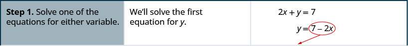
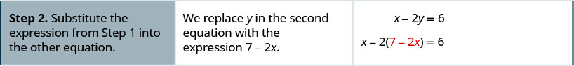
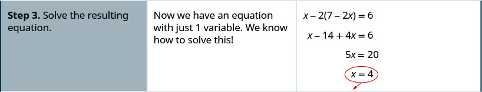
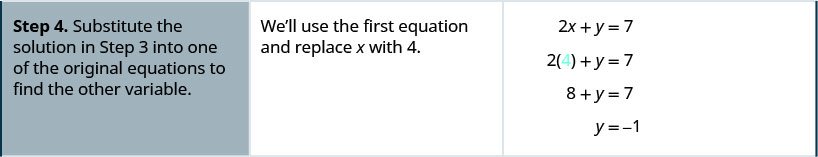
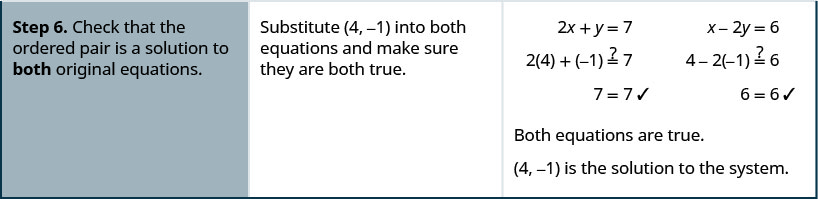
If one of the equations in the system is given in slope–intercept form, Step 1 is already done! We’ll see this in Example 2.
Solve the system by substitution.
Solution
Solution
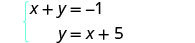 |
|
| The second equation is already solved for y. We will substitute into the first equation. |
|
| Replace the y with x + 5. | 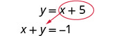 |
| Solve the resulting equation for x. | |
| Substitute x = −3 into y = x + 5 to find y. | |
| The ordered pair is (−3, 2). | |
| Check the ordered pair in both equations: |
|
| The solution is (−3, 2). |
If the equations are given in standard form, we’ll need to start by solving for one of the variables. In this next example, we’ll solve the first equation for y.
Solve the system by substitution.
Solution
Solution
| Solve for y. Substitute into the other equation. |
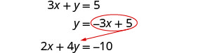 |
| Replace the y with −3x + 5. | 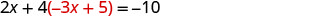 |
| Solve the resulting equation for x. | |
|
|
|
| Substitute x = 3 into 3x + y = 5 to find y. | |
|
|
|
| The ordered pair is (3, −4). | |
| Check the ordered pair in both equations: |
|
| The solution is (3, −4). |
In Example 3 it was easiest to solve for y in the first equation because it had a coefficient of 1. In Example 4 it will be easier to solve for x.
Solve the system by substitution.
Solution
Solution
We will solve the first equation for and then substitute the expression into the second equation.
| Solve for x. Substitute into the other equation. |
|
| Replace the x with 2y − 2. | |
| Solve the resulting equation for y. | |
|
Substitute y = 5 into x − 2y = −2 to find x. |
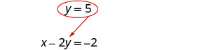 |
| The ordered pair is (8, 5). | |
| Check the ordered pair in both equations: |
|
| The solution is (8, 5). |
When both equations are already solved for the same variable, it is easy to substitute!
Solve the system by substitution.
Solution
Solution
Since both equations are solved for y, we can substitute one into the other.
| Substitute for y in the first equation. | 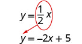 |
| Replace the y with | 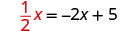 |
| Solve the resulting equation. Start by clearing the fraction. |
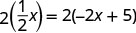 |
| Solve for x. | |
| Substitute x = 2 into y = to find y. |
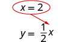 |
| The ordered pair is (2,1). | |
| Check the ordered pair in both equations: |
|
| The solution is (2,1). |
Be very careful with the signs in the next example.
Solve the system by substitution.
Solution
Solution
We need to solve one equation for one variable. We will solve the first equation for y.
| Solve the first equation for y. | |
| Substitute −2x + 2 for y in the second equation. | |
| Replace the y with −2x + 2. | 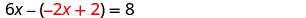 |
| Solve the equation for x. | |
|
|
|
|
Substitute into 4x + 2y = 4 to find y. |
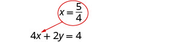 |
| The ordered pair is | |
| Check the ordered pair in both equations. |
|
| The solution is |
In Example 7, it will take a little more work to solve one equation for x or y.
Solve the system by substitution.
Solution
Solution
We need to solve one equation for one variable. We will solve the first equation for x.
| Solve the first equation for x. | |
| Substitute for x in the second equation. | 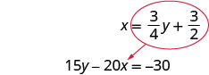 |
| Replace the x with | |
| Solve for y. | |
Since 0 = 0 is a true statement, the system is consistent. The equations are dependent. The graphs of these two equations would give the same line. The system has infinitely many solutions.
Look back at the equations in Example 7. Is there any way to recognize that they are the same line?
Let’s see what happens in the next example.
Solve the system by substitution.
Solution
Solution
The second equation is already solved for y, so we can substitute for y in the first equation.
| Substitute x for y in the first equation. | 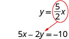 |
| Replace the y with | 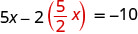 |
| Solve for x. | |
Since 0 = −10 is a false statement the equations are inconsistent. The graphs of the two equation would be parallel lines. The system has no solutions.
Solve Applications of Systems of Equations by Substitution
We’ll copy here the problem solving strategy we used in the Solving Systems of Equations by Graphing section for solving systems of equations. Now that we know how to solve systems by substitution, that’s what we’ll do in Step 5.
Some people find setting up word problems with two variables easier than setting them up with just one variable. Choosing the variable names is easier when all you need to do is write down two letters. Think about this in the next example—how would you have done it with just one variable?
The sum of two numbers is zero. One number is nine less than the other. Find the numbers.
Solution
Solution
| Step 1. Read the problem. | |
| Step 2. Identify what we are looking for. | We are looking for two numbers. |
| Step 3. Name what we are looking for. | Let the first number Let the second number |
| Step 4. Translate into a system of equations. | The sum of two numbers is zero. |
| One number is nine less than the other. | |
| The system is: | 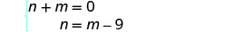 |
|
Step 5. Solve the system of equations. We will use substitution since the second equation is solved for n. |
|
| Substitute m − 9 for n in the first equation. | 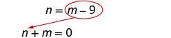 |
| Solve for m. | |
| Substitute into the second equation and then solve for n. |
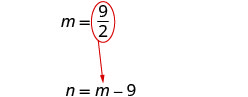 |
| Step 6. Check the answer in the problem. | Do these numbers make sense in the problem? We will leave this to you! |
| Step 7. Answer the question. | The numbers are and |
In the Example 10, we’ll use the formula for the perimeter of a rectangle, P = 2L + 2W.
The perimeter of a rectangle is 88. The length is five more than twice the width. Find the length and the width.
Solution
Solution
| Step 1. Read the problem. | 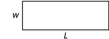 |
| Step 2. Identify what you are looking for. | We are looking for the length and width. |
| Step 3. Name what we are looking for. | Let the length the width |
| Step 4. Translate into a system of equations. | The perimeter of a rectangle is 88. |
| 2L + 2W = P |
|
| The length is five more than twice the width. | |
| The system is: | 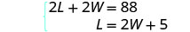 |
|
Step 5. Solve the system of equations. We will use substitution since the second equation is solved for L. Substitute 2W + 5 for L in the first equation. |
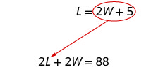 |
| Solve for W. | |
| Substitute W = 13 into the second equation and then solve for L. |
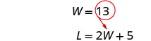 |
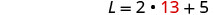 |
|
| Step 6. Check the answer in the problem. | Does a rectangle with length 31 and width 13 have perimeter 88? Yes. |
| Step 7. Answer the equation. | The length is 31 and the width is 13. |
For Example 11 we need to remember that the sum of the measures of the angles of a triangle is 180 degrees and that a right triangle has one 90 degree angle.
The measure of one of the small angles of a right triangle is ten more than three times the measure of the other small angle. Find the measures of both angles.
Solution
Solution
| Step 1. Read the problem. | 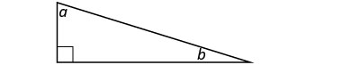 |
| Step 2. Identify what you are looking for. | We are looking for the measures of the angles. |
| Step 3. Name what we are looking for. | Let the measure of the 1st angle the measure of the 2nd angle |
| Step 4. Translate into a system of equations. | The measure of one of the small angles of a right triangle is ten more than three times the measure of the other small angle. |
| The sum of the measures of the angles of a triangle is 180. |
|
| The system is: | |
|
Step 5. Solve the system of equations. We will use substitution since the first equation is solved for a. |
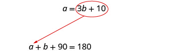 |
| Substitute 3b + 10 for a in the second equation. |
|
| Solve for b. | |
| Substitute b = 20 into the first equation and then solve for a. |
|
| Step 6. Check the answer in the problem. | We will leave this to you! |
| Step 7. Answer the question. | The measures of the small angles are 20 and 70. |
Heather has been offered two options for her salary as a trainer at the gym. Option A would pay her $25,000 plus $15 for each training session. Option B would pay her $10,000 + $40 for each training session. How many training sessions would make the salary options equal?
Solution
Solution
| Step 1. Read the problem. | |
| Step 2. Identify what you are looking for. | We are looking for the number of training sessions that would make the pay equal. |
| Step 3. Name what we are looking for. | Let Heather’s salary. the number of training sessions |
| Step 4. Translate into a system of equations. | Option A would pay her $25,000 plus $15 for each training session. |
| Option B would pay her $10,000 + $40 for each training session |
|
| The system is: | |
|
Step 5. Solve the system of equations. We will use substitution. |
|
| Substitute 25,000 + 15n for s in the second equation. | |
| Solve for n. | |
| Step 6. Check the answer. | Are 600 training sessions a year reasonable? Are the two options equal when n = 600? |
| Step 7. Answer the question. | The salary options would be equal for 600 training sessions. |
Key Concepts
-
Solve a system of equations by substitution
- Solve one of the equations for either variable.
- Substitute the expression from Step 1 into the other equation.
- Solve the resulting equation.
- Substitute the solution in Step 3 into one of the original equations to find the other variable.
- Write the solution as an ordered pair.
- Check that the ordered pair is a solution to both original equations.
Practice Makes Perfect
Solve a System of Equations by Substitution
In the following exercises, solve the systems of equations by substitution.
Solution
Solution
Solution
Solution
Solution
Solution
Solution
Solution
Solution
Solution
Solution
Solution
(10, 12)
Solution
Solution
Solution
Infinitely many solutions
Solution
Infinitely many solutions
Solution
No solution
Solution
No solution
Solve Applications of Systems of Equations by Substitution
In the following exercises, translate to a system of equations and solve.
The sum of two numbers is 15. One number is 3 less than the other. Find the numbers.
Solution
The numbers are 6 and 9.
The sum of two numbers is 30. One number is 4 less than the other. Find the numbers.
The sum of two numbers is −26. One number is 12 less than the other. Find the numbers.
Solution
The numbers are −7 and −19.
The perimeter of a rectangle is 50. The length is 5 more than the width. Find the length and width.
The perimeter of a rectangle is 60. The length is 10 more than the width. Find the length and width.
Solution
The length is 20 and the width is 10.
The perimeter of a rectangle is 58. The length is 5 more than three times the width. Find the length and width.
The perimeter of a rectangle is 84. The length is 10 more than three times the width. Find the length and width.
Solution
The length is 34 and the width is 8.
The measure of one of the small angles of a right triangle is 14 more than 3 times the measure of the other small angle. Find the measure of both angles.
The measure of one of the small angles of a right triangle is 26 more than 3 times the measure of the other small angle. Find the measure of both angles.
Solution
The measures are 16° and 74°.
The measure of one of the small angles of a right triangle is 15 less than twice the measure of the other small angle. Find the measure of both angles.
The measure of one of the small angles of a right triangle is 45 less than twice the measure of the other small angle. Find the measure of both angles.
Solution
The measures are 45° and 45°.
Maxim has been offered positions by two car dealers. The first company pays a salary of $10,000 plus a commission of $1,000 for each car sold. The second pays a salary of $20,000 plus a commission of $500 for each car sold. How many cars would need to be sold to make the total pay the same?
Jackie has been offered positions by two cable companies. The first company pays a salary of $ 14,000 plus a commission of $100 for each cable package sold. The second pays a salary of $20,000 plus a commission of $25 for each cable package sold. How many cable packages would need to be sold to make the total pay the same?
Solution
80 cable packages would need to be sold.
Amara currently sells televisions for company A at a salary of $17,000 plus a $100 commission for each television she sells. Company B offers her a position with a salary of $29,000 plus a $20 commission for each television she sells. How many televisions would Amara need to sell for the options to be equal?
Mitchell currently sells stoves for company A at a salary of $12,000 plus a $150 commission for each stove he sells. Company B offers him a position with a salary of $24,000 plus a $50 commission for each stove he sells. How many stoves would Mitchell need to sell for the options to be equal?
Solution
Mitchell would need to sell 120 stoves.
Everyday Math
When Gloria spent 15 minutes on the elliptical trainer and then did circuit training for 30 minutes, her fitness app says she burned 435 calories. When she spent 30 minutes on the elliptical trainer and 40 minutes circuit training she burned 690 calories. Solve the system for , the number of calories she burns for each minute on the elliptical trainer, and , the number of calories she burns for each minute of circuit training.
Stephanie left Riverside, California, driving her motorhome north on Interstate 15 towards Salt Lake City at a speed of 56 miles per hour. Half an hour later, Tina left Riverside in her car on the same route as Stephanie, driving 70 miles per hour. Solve the system .
- ⓐ for to find out how long it will take Tina to catch up to Stephanie.
- ⓑ what is the value of , the number of hours Stephanie will have driven before Tina catches up to her?
Solution
ⓐ hours ⓑ hours
Writing Exercises
Solve the system of equations
ⓐ by graphing. ⓑ by substitution. ⓒ Which method do you prefer? Why?
Solve the system of equations
by substitution and explain all your steps in words.
Solution
Answers will vary.
Self Check
ⓐ After completing the exercises, use this checklist to evaluate your mastery of the objectives of this section.
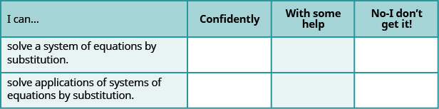
ⓑ After reviewing this checklist, what will you do to become confident for all objectives?